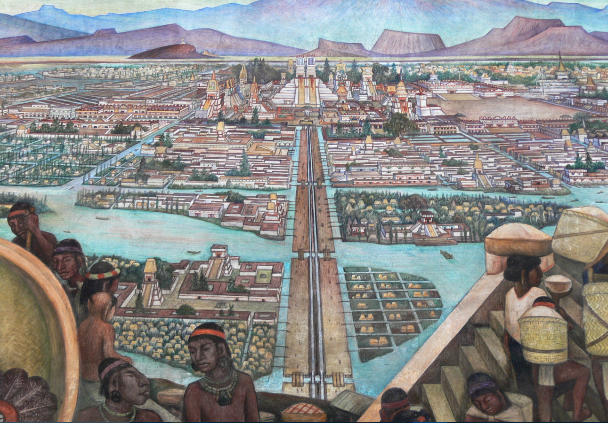
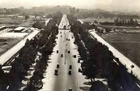
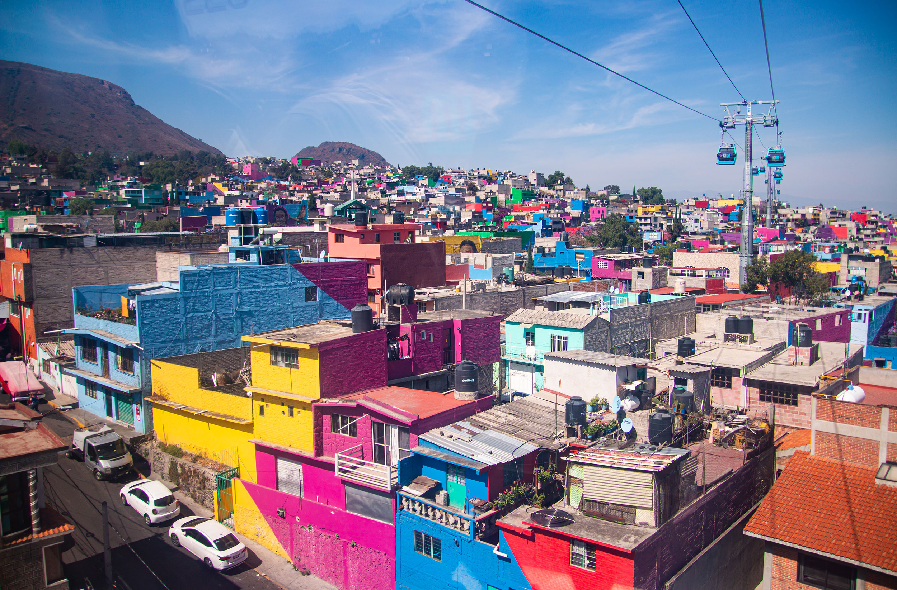
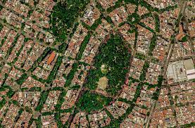

Mexico-Tenochtitlan
The city began as a highly organized lake metropolis with causeways, canals, markets, ritual centers, and hydraulic infrastructure.
.jpg)
Mexico City, 1860-2020
A historical timeline first, then an added data section comparing the Urban Quality Index (UQI) with the Human Development Index (HDI) by alcaldía.
First: the vocabulary
Urban planning determines where roads, transit, parks, drainage, water, electricity, hospitals, housing, and public spaces are placed. In Mexico City, those choices produced a visible divide between planned, serviced, Europeanized districts and peripheral neighborhoods that often grew before infrastructure arrived.
Thesis question
This project argues that planning has not been equal. The timeline shows how formal investment favored central, western, and elite spaces first, while the UQI maps test whether those uneven planning histories still appear in infrastructure, services, and human development.
The Paris model
During the Porfiriato, Mexico City's elite explicitly copied Paris: boulevards like Reforma, formal parks, sewers, and monument axes. Paris became the reference image for what a modern capital should look like. But Mexico City applied that model selectively. Central and western districts received Parisian boulevards and amenities first, while peripheral colonias populares grew without the same infrastructure.
This project tests whether that uneven adoption still appears in the data. The same UQI instrument is now applied to Paris itself, so you can compare the city that served as the model with the city that imitated it. See the parallel comparison or the full Paris page.
Then: the image timeline
The city began as a highly organized lake metropolis with causeways, canals, markets, ritual centers, and hydraulic infrastructure.
Spanish authorities rebuilt the city around plazas, churches, administrative power, and a colonial grid layered over Indigenous infrastructure.

Reforma created a monumental axis linking elite residence, ceremony, and national identity, borrowing from European boulevard planning.

Porfirian elites looked to Paris for models of order, hygiene, parks, monuments, and elite neighborhoods. Planning became a visual language of progress.

The Revolution disrupted elite projects, but the city kept expanding and absorbing migrants, creating pressure for housing and services.

Industrial growth and migration pushed many residents to peripheral settlements where urbanization arrived before full infrastructure.

The Metro transformed access across the city, but transit coverage and service quality remained uneven across alcaldías.

The earthquake exposed uneven safety, housing vulnerability, and the limits of centralized planning.

Central districts gained investment, restoration, tourism, and redevelopment, while affordability and displacement became new forms of inequality.

Recent investments in mobility, parks, social infrastructure, and public space try to correct long histories of unequal access.

Addition after the timeline
The UQI map is the main view. The 2020 HDI map and the 2020 scatterplot below show how urban planning quality aligns with human development.
The upward trend line suggests that alcaldías with stronger urban-quality conditions also tend to have higher human development. In this project, UQI works as a proxy for urban planning: access to transit, water, drainage, electricity, hospitals, green space, and civic third spaces. When those planning outcomes are stronger, the HDI score is generally higher too.
Inequality over time
This line graph tracks each alcaldía's UQI score across decades. If planning were equal, the lines would converge. Instead, the chart shows how some alcaldías improve earlier and stay ahead, while others catch up later or remain lower.
The spread between lines is the inequality story. Urban planning did not arrive everywhere at the same time: transit, drainage, water, hospitals, green space, and civic amenities accumulated unevenly.